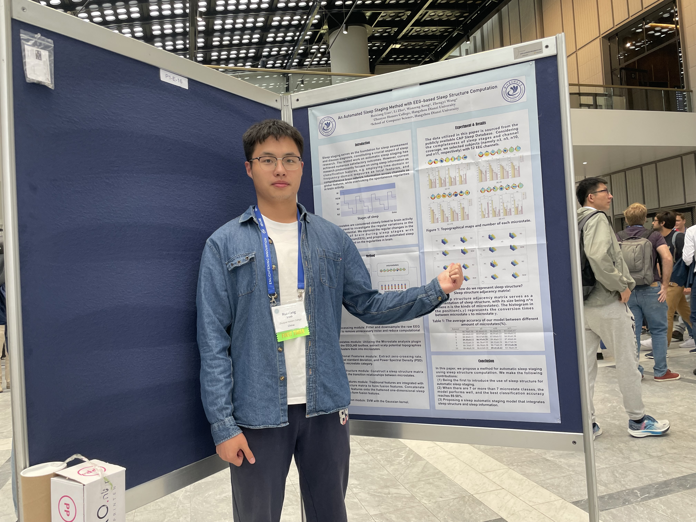

Ruixiang Liao
Hello/你好👋
I’m a first-year MPhil student in CUHK(SZ) majoring in Computer and Information Engineering. My research interests mainly focus on embodied AI and computer vision.
Prior to CUHK(SZ), I focused on EEG data analysis in Brain-Computer Interface (BCI) 🧠, operating at the intersection of neuroscience and computer science.
I’m a first-year MPhil student in CUHK(SZ) majoring in Computer and Information Engineering. My research interests mainly focus on embodied AI and computer vision.
Prior to CUHK(SZ), I focused on EEG data analysis in Brain-Computer Interface (BCI) 🧠, operating at the intersection of neuroscience and computer science.

📚 Publications
An Automated Sleep Staging Method with EEG-based Sleep Structure Computation
An EEG-based Sleep Staging method with hybrid entropy computation measures
📝 News
July 2024
Thrilled to share my work "An Automated Sleep Staging Method with EEG-based Sleep Structure Computation" at CogSci2024, Rotterdam, Netherlands.
September 2022
Time has flown by! This summer at NUS, I have completed a Computer Vision-based traffic sign recognition system whose recognition accuracy is 92.7% and got the highest grade (Tied for the first place, 1/46) in this summer course.